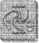

ARTEMİS çalışma odasındaki deri kaplı, döner koltuğunda geriye yaslanıp sivri uçlu parmaklarının üzerinden gülümsedi. Kusursuzdu. Bu küçük patlama, perilerin kibirli davranışlarını ortadan kaldıracaktı. Üstelik, yer yüzünden bir balina avcı gemisi daha eksilmişti. Artemis Fowl balina avcı gemilerini sevmezdi. Yağın yan ürünlerini üretmenin daha uygun yolları vardı.
Yer saptayıcısının içine gizlediği, topluiğne büyüklüğündeki kamera kusursuz çalışmıştı. Yüksek çözünürlüklü resimleri sayesinde, perinin soluğundaki davranışları ele verici kristalleri ayırmayı başarmıştı.
Artemis bodrum katındaki gizli kameraya göz attı. Tutsağı şu an bebek karyolasında, başını ellerinin arasına almış oturuyordu. Artemis kaşlarını çattı. Perinin bu denli... insanca bir görüntüde olmasını beklemiyordu. Şimdiye kadar yalnızca birer avdılar. Avlanacak hayvanlardı. Oysa şimdi, böylesini gördükten sonra, üstelik de bu kadar sıkıntı içindeyken, işler değişmişti.
Artemis bilgisayarı bekleme moduna getirip ana kapılara doğru yöneldi. Konuğuyla biraz sohbet etmenin zamanı gelmişti. Parmakları pirinç tokmağa değer değmez, önündeki kapı açıldı. Juliet hemen girişte duruyordu, yanakları telaştan kızarmıştı.
“Artemis,” dedi soluk soluğa. “Annen. O...”
Artemis midesine kurşun bir güllenin düştüğünü sandı.
“Evet?”
“Şey söylüyor, Artemis... Artemis, şeyin geldiğini...” “Hadi, Juliet. Tanrı aşkına söyle.”
Juliet her iki elini de ağzına götürüp kendini toparladı. Birkaç saniye sonra, pullu tırnaklarını aralayıp parmaklarının arasından konuştu.
“Babanız, efendim. Büyük Artemis. Bayan Fowl, onun geri döndüğünü söylüyor!”
Artemis kalbinin bir an için durduğuna yemin edebilirdi. Babası? Geri dönmüş? Bu olabilir miydi? Elbette ki her zaman babasının hayatta olduğuna inanmıştı. Ama son zamanlarda, özellikle de bu peri projesine el attıktan sonra, babası aklının uzak bir köşesinde unutulmuş gibiydi. Artemis midesinin suçlulukla burulduğunu hissetti. Vazgeçmişti. Kendi öz babasından vazgeçmişti.,
“Onu gördün mü, Juliet? Yani kendi gözlerinle?” Kız başını olumsuzca salladı.
“Hayır, Artemis, efendim. Yalnızca bazı sesler duydum. Yatak odasından gelen. Ama Bayan Fowl içeri girmeme izin vermedi. Kesinlikle. Sıcak bir içecek vermem için bile.”
Artemis kafasında bir hesap yaptı. Geri döneli henüz bir saat olmuştu. Babası Juliet’in dikkatini çekmeden içeri girmiş olabilirdi. Olabilirdi. Artemis telsiz sinyalleriyle sürekli güncellenen, Greenwich Saatine göre ayarlanmış saatine baktı. Sabahın üçüydü. Zaman ilerliyordu. Tüm planı perilerin güneş doğmadan önce atacakları bir sonraki adıma bağlıydı.
Artemis irkildi. İşte yine aynı şeyi yapıyordu, ailesini ikinci plana atıyordu. Ona neler oluyordu böyle? Burada öncelik babasınındı, para kazanacağı bir projenin değil.
Juliet hâlâ kapının girişinde durmuş, kocaman mavi gözleriyle onu izliyordu. Her zaman yaptığı gibi, Artemis’in bir karar vermesini bekliyordu. Ve ilk kez Artemis’in soluk yüzünde kararsızlık vardı.
“Pekâlâ,” diye mırıldandı Artemis, en sonunda. “Bir an önce yukarı çıksam iyi olacak.”
Artemis kızın yanından hızla geçip basamakları ikişer ikişer çıktı. Annesinin yatak odası iki kat yukarıdaydı, çatıdan bozma bir odaydı.
Artemis kapının önünde kararsızca durdu. Bir mucize olmuş ve babası dönmüşse eğer, ne diyecekti? Ne yapacaktı? Bu konuda telaş etmek gülünçtü. Böyle şeyler önceden tahmin edilemezdi. Kapıyı yavaşça vurdu.
“Anne?”
Yanıt yoktu ama Artemis bir kıkırdama duyduğunu sanıp bir anda geçmişe döndü. Önceleri burası, annesiyle babasının oturma odasıydı. Burada saatlerce şezlongda oturur, güvercinleri beslerken ya da Dublin’den geçen gemileri izlerken, liseliler gibi gülüşürlerdi. Baba Artemis ortadan kaybolunca, Angeline Fowl buraya gittikçe daha çok bağlandı ve sonunda odadan çıkmayı kesinlikle reddetti.
“Anne? İyi misin?”
İçeriden boğuk sesler geliyordu. Gizli bir anlaşma olduğunu belli eden fısıltılar.
“Anne. İçeri geliyorum.”
“Bekle bir dakika. Timmy, kes şunu, seni azgın. Konuğumuz var.”
Timmy mi? Artemis’in yüreği, göğsünde bir trampet gibi güm güm vurmaya başladı. Timmy annesinin babasına taktığı ad. Timmy ile Arty. Angeline’in yaşamındaki iki erkekti. Artemis daha fazla bekleyemeyecekti. Çifte kapıdan hızla içeri girdi.
İlk gözüne çarpan, ışık oldu. Annesi ışıkları açmıştı. Hiç kuşkusuz, bu iyiye işaretti. Artemis, annesini nerede bulacağını biliyordu. Tam olarak nereye bakması gerektiğini. Ama yapamadı. Ya... Ya...
“Evet, size nasıl yardımcı olabiliriz?”
Artemis arkasını döndü, hâlâ yere bakıyordu. “Benim.”
Annesi güldü. Havalı ve kaygısızca. “Sen olduğunu görebiliyorum, Baba. Oğluna bir gece olsun izin veremez misin? Alt tarafı, bu bizim halayımız.”
Artemis anlamıştı. Annesinin deliliği azmıştı yine. Baba mı? Angeline, Artemis’in, kendi dedesi olduğunu sanıyordu. Dedesi on yıl önce ölmüştü. Artemis bakışlarını yavaşça kaldırdı.
Annesi şezlongda oturuyordu, gelinliğinin içinde göz kamaştırıcı görünüyordu, yüzünde beceriksizce yapılmış ağır bir makyaj vardı. Ama işin en kötüsü bu değildi.
Annesinin yanında, babasının bir kopyası duruyordu, bundan tam on dört yıl önce Christchurch Katedralindeki o harika düğün sabahında giydiği giysiden yapılmış bir maketi. Giysiler ambalaj kâğıtlarıyla doldurulmuştu ve gömleğin tepesinde, üzeri ruj lekeleriyle dolu bir yastık duruyordu. Gülünç denebilirdi. Artemis hıçkırıklarını bastırdı, ümitleri yazın beliren bir gökkuşağı gibi dağılmıştı.
“Ne diyorsun, Baba?” dedi kaim bir ses tonuyla Angeline, bir yandan da yastığı tıpkı bir vantriloğun kuklasını hareket ettirdiği gibi oynatıyordu. “Oğluna bir gecelik izin ver, ha ne dersin?”
Artemis başını salladı. Başka ne yapabilirdi ki? “Pekâlâ bir gece. Yarın da sizin olsun. Mutlu olun.” Angeline’in yüzünden gerçek mutluluk okunuyordu. Kim olduğunu hatırlayamadığı oğluna sarılmak için, kanepeden fırladı.
“Teşekkürler, Baba. Teşekkürler.”
Ona bir aldatmacaymış gibi gelse de Artemis de ona sarıldı.
“Rica ederim, anne, şey, Angeline. Artık gitmem gerek. İlgilenmem gereken bir işim var.”
Annesi sahte kocasının yanma oturdu.
“Evet, Baba. Sen git, merak etme biz birbirimizi eğlendirecek bir şeyler buluruz.”
Artemis odadan çıktı. Arkasına bakmadı. Yapılacak işler vardı. Para sızdırılacak periler. Annesinin hayal dünyasına ayıracak zamanı yoktu.
Yüzbaşı Holly Short elleriyle başını tutuyordu. Daha doğrusu tek eliyle. Öbür eliyle çizmesinin yan tarafını tırmalıyordu, kameranın kör noktasının altında. Aslında kafasında bir şey yoktu ama düşmanını hâlâ bir işler çevirdiğine inandırmaktan zarar gelmezdi. Belki de onu küçümsüyorlardı. Ye bu şimdiye kadar yaptıkları en büyük hata olurdu.
Holly’nin parmakları ayak bileğini dürten nesnenin çevresinde kenetlendi. Şeklinden orada gizlenmiş duran şeyin ne olduğunu hemen anlamıştı. Meşe palamudu! Meşe ağacının oradaki kargaşa sırasında, çizmesinin içine kaymış olmalıydı. Bu, hayatını kurtaracak bir gelişme olabilirdi. Artık tek gereksinim duyduğu şey, bir toprak parçasıydı, böylece güçleri yeniden canlanacaktı.
Holly hücrenin içine, gizli gizli göz gezdirdi. Görünüşe göre, yeni sıva yapılmıştı. Ne bir tek çatlak, ne kabarıp dökülmüş bir boya. Gizli silahı saklamak için tek bir yer bile yoktu. Holly kararsızca doğrulup bacaklarının üzerinde dengede durabiliyor mu, diye baktı. Fena değil, dizleri biraz titriyordu ama şimdilik yeterli sayılırdı. Yanaklarını ve avuçlarını duvarın yumuşak yüzeyine bastırarak, kenardan yürüdü. Evet, sıva tazeydi, daha yeni yapılmıştı. Yams yerleri hâlâ nemliydi. Anlaşılan, hapishanesi onun için özel olarak hazırlanmıştı.
“Bir şey mi arıyordun?” dedi bir ses. Bu soğuk, kalpsiz bir sesti.
Holly duvardan uzaklaştı. Çocuk iki metre uzağında duruyordu, gözleri aynalı camların ardında gizliydi. Hiç ses çıkartmadan odaya girmişti. Bu olağanüstüydü.
“Otur lütfen.”
Holly lütfen oturmak istemedi. Tek istediği, bu küstah köpek yavrusunu, dirseğiyle etkisiz duruma getirip sefil postunu manivela olarak kullanmaktı. Artemis bunu Holly’nin gözlerinden okuyabiliyordu. Bu onu güldürmüştü.
“Aklında bazı düşünceler var, öyle değil mi, Yüzbaşı Short?”
Holly dişlerini gösterdi, bu yanıt yeterliydi.
“Burada her ikimiz de kuralların tam olarak farkındayız, Yüzbaşı. Burası benim evim. İsteklerime uymak zorundasın. Bunlar sizin kurallarınız, benim değil. Açıkçası, bu isteklerimin arasında, bedenime bir zarar verilmesi ya da senin evden kaçmaya kalkışman yok.”
Söyledikleri Holly’yi çok şaşırttı.
“Sen nereden biliyorsun —”
“Adını mı? Rütbeni mi?” Artemis, içinde bir mutluluk olmaksızın gülümsedi. “Bir künye takarsan eğer...”
Holly farkında olmadan giysisinin üzerindeki gümüş künyeyi eliyle kapattı.
“Ama bu şeyce yazılı -
“Gnome dilinde. Biliyorum. Bu dili akıcı konuşurum. Şebekemdeki diğer herkes gibi.”
Holly bu önemli açıklamayı sindirebilmek için bir an sessiz kaldı.
“Fowl,” dedi sonra dokunaklı tonda, “neler yaptığının farkında değilsin, iki dünyayı bu şekilde bir araya getirmek, hepimiz için felaket demek olabilir.”
Artemis omuz silkti. “Beni ilgilendiren, hepimiz değil, yalnızca benim. Ve inan bana, benim için kesinlikle iyi olacak. Şimdi, otur lütfen.”
Holly ela gözlerini, önündeki bu ufacık canavardan bir an olsun ayırmadan oturdu.
“Pekâlâ, neymiş bakalım bu ana plan, Fowl? Tahmin edeyim: dünyaya egemen olmak mı?”
“Kesinlikle o kadar duygusal bir şey değil,” diye kıkırdadı Artemis. “Yalnızca servet.”
“Hırsız!” diye tükürdü Holly. “Sen yalnızca adi bir hırsızsın!”
Artemis’in yüzünden kızgınlık akıyordu, az sonra yerini o bildik, aşağılayıcı sırıtışına bırakacaktı.
“Evet, istersen, hırsız diyebilirsin. Ama adi bir hırsız değil. Dünyanın ilk türler-arası hırsızıyım.”
Yüzbaşı Short burnundan soludu. “Demek, ilk türlerarası hırsız! Çamur Adamlar binlerce yıldır paramızı çalıyorlar. Neden yeraltında yaşadığımızı sanıyorsun sen?” “Doğru. Ama ben bir periyi altınından başarıyla ayıracak, ilk hırsız olacağım.”
“Altın mı? Altın ha? Seni aptal insan. Bu altın saçmalığına gerçekten inanıyor olamazsın. Bazı şeyler gerçek değildir, bilmiyor musun?”
Holly başını geriye doğru atarak güldü.
Artemis sabırla tırnaklarına bakıp Holly’nin konuşmasını bitirmesini bekledi. Kahkahaları yavaşlayınca, Artemis işaret parmağını salladı.
“Gülmekte haklısın, Yüzbaşı Short. Bir süre için, ben de şu gökkuşağının altındaki altınlarla dolu küp saçmalığına inandım ama artık daha fazlasını biliyorum. Şimdi artık fidye fonunu öğrendim.”
Holly yüz hatlarını kontrol altında tutabilmek için çabaladı.
“Ne fidye fonu?”
“Of, hadi ama Yüzbaşı. Sessiz sinema mı oynuyoruz? Bunu bana kendin anlattın.”
“Be-ben mi anlatmışım!” diye kekeledi Holly. “Saçma!”
“Koluna bak.”
Holly giysisinin sağ kolunu yukarı kıvırdı. Damarının üzerine küçük bir pamuk parçası yapıştırılmıştı.
“Sodyum pentanolü buradan şırınga ettik. Peri Halkı arasındaki adıyla, gerçek serumu. Bülbül gibi şakıdın.”
Holly bunun doğru olduğunu biliyordu. Yoksa nasıl bilebilirdi ki?
“Sen delisin!”
Artemis hoşgörüyle başını salladı. “Kazanırsam, bir dahiyim. Kaybedersem, işte o zaman deliyim. Tarih böyle yazılır.”
Elbette ki ortada sodyum pentanol yoktu, yalnızca steril bir iğneyle açılmış zararsız bir delik vardı. Artemis altın yumurtlayan tavuğunun beynine zarar verme riskini göze alamazdı, öte yandan, Kitabı kaynak aldığını ortaya çıkarmaya da cesaret edemezdi. Onu kendi halkına ihanet ettiğine inandırmak daha iyiydi. Bu, moralini bozar ve Artemis’in zihinsel oyunları karşısında daha dirençsiz kalmasına neden olurdu. Yine de kendi yaptığı hileden rahatsızlık duymuştu. İnkâr edilmeyecek kadar acımasızdı. Bu altın için daha ne kadar ileri gidebilirdi? Bilmiyordu ve zamanı gelinceye kadar bilmeyecekti de.
Bu son gelişme, Holly’yi bir anda yenilgiye uğratıp yıktı. Konuşmuştu. Kutsal sırları açıklamıştı. Kaçmayı başarabilse bile cezasını Kuzey Buz Denizinin altındaki dondurucu tünellerden birinde çekecekti.
“Bu iş daha bitmedi, Fowl,” dedi Holly, en sonunda. “Asla tahmin edemeyeceğin güçlere sahibiz. Onları sana anlatmak, günler sürer.”
Öfkeli oğlan yine güldü. “Kaç zamandır burada olduğunu sanıyorsun?”
Holly inledi; vereceği yanıtı biliyordu. “Birkaç saat mi?” Artemis başını salladı. “Üç gün,” diye yalan söyledi. Altmış saatten fazla bir süre boyunca seni sorguladık... ta ki öğrenmek istediklerimizin tümünü anlatıncaya kadar.” Sözler ağzından dökülür dökülmez, Artemis pişmanlık duydu. Bu zihinsel oyunların Holly’yi derinden etkilediği belliydi, onu mahvediyorlardı. Buna gerçekten de gerek var mıydı?
“Üç gün mü? Beni öldürebilirdiniz. Sen ne tür bir...” Ve Artemis’in beynine kuşku kıvılcımları gönderen, işte bu sessizlik oldu. Peri onun öylesine kötü olduğunu düşünüyordu ki söyleyecek uygun sözcükleri bile bulamıyordu.
Holly kendini toparladı.
“Pekâlâ öyleyse, Efendi Fowl,” diye sertçe haykırdı, “hakkımızda bu kadar çok şey biliyorsan, yerimi bulduklarında olacakları da biliyorsundur.”
Artemis, başını dalgın dalgın salladı. “Oh, evet, biliyorum. Aslında, bunu sabırsızlıkla bekliyorum.” Sırıtma sırası Holly’deydi.
“Ya, demek öyle. Söyle bana, evlat, bir trolle karşılaştın mı hiç?”
insanın özgüveni ilk kez sarsılmış gibiydi.
“Hayır. Hiç troll görmedim.”
Holly biraz daha diş gösterdi.
“Göreceksin, Fowl. Göreceksin. Ve umarım, bunu izlemek için orada olurum.”
LEP yeryüzü kumanda merkezini El’de kurmuştu, yani Tara’da.
“Pekâlâ?” dedi Root, alnına yanık merhemi süren hemşire gremlinin eline vurarak. “Bırak artık. Sihrim beni kısa sürede iyileştirir, nasıl olsa.”
“Pekâlâ, ne?” diye yanıt verdi Foaly.
“Bugün bana küstahlık yapmaya kalkışma, Foaly, çünkü bugün şu, Oh-atların-teknolojisi-beni-çok-etkiliyor günlerinden biri değil. Şu insan hakkında neler bulduğunu anlat.”
Foaly başındaki alüminyum şapkasını sağlamlaştırıp kaşlarını çattı. Bir kraker inceliğindeki dizüstü bilgisayarının kapağını açtı.
“İnterpol’ün kayıtlarına girdim. Çok zor olmadı,
inanın bana. Karşılamak için bir tek kırmızı halı sermedikleri kaldı...”
Root parmaklarını konferans masasına vurdu. “Konuya gir.”
“Tamam. Fowl. On cigabaytlık bir dosya. Kâğıda dökersek, yarım kütüphane eder.”
Yarbay ıslık çaldı. “Yoğun bir insan, anlaşılan.” “Aile,” diye düzeltti Foaly. “Fowl ailesi nesillerdir adaleti çökertmekle uğraşmış. Haraç alma, kaçakçılık, silahlı soygun. Son yüzyılda, çoğunlukla toplu suçlar.” “Yerini saptayabildiniz mi?”
“Bu, işin en kolayıydı. Fowl Malikânesi. Dublin’in dışında, yüz hektarlık bir araziye kurulu. Fowl Malikânesi şu an olduğumuz yerden yalnızca yirmi kilometre uzakta.”
Root alt dudağını ısırdı.
“Yalnızca yirmi kilometre mi? Yani gün ışımadan oraya varabiliriz, demek ki.”
“Evet. Her şey, güneş ışınlarının altında kontrolden çıkmadan, şu pisliği temizleyin.”
Yarbay başını salladı. Bu onların tek şansıydı. Periler yüzyıllardır gün ışığında çalışmamışlardı. Yerüstünde yaşadıklarında bile yalnızca geceleri ortaya çıkarlardı. Güneş sihirlerini eritirdi, tıpkı fotoğrafları soldurduğu gibi. Vurucu güçlerini göndermek için bir gün daha beklemek zorunda kalırlarsa, kim bilir Fowl bu süre içinde ne gibi zararlar verebilirdi?
Belki de tüm bu olay, medyaya yönlendirilmişti ve Yüzbaşı Short’un resimleri yarın sabah gezegendeki tüm gazetelerin ön sayfalarını süslüyor olacaktı. Root ürperdi. Bu her şeyin sonu demek olurdu, tabii Çamur Adamlar bu süre içinde başka türden canlılarla bir arada yaşamayı öğrenmemişlerse hâlâ. Ve tarih ona, insanların hiç kimseyle geçinemediklerini öğretmişti, hatta kendi kendileriyle bile.
“Tamam. Herkes kemerlerini bağlayıp binsin. V uçuş düzeni. Hedef, Malikâne toprakları.”
Düzeltme Timi, silahlarıyla her türlü metalik sesi çıkararak, askeri dilde onay sözcükleri kükrediler.
“Foaly, hırçınları toparla. Mekikle bizi takip et. Ve büyük yansıtıcıyı getir. Bütün araziyi kapatıp kendimize nefes alabilecek biraz yer açacağız.”
“Bir şey daha var, Yarbay,” dedi Foaly, düşünceliydi.
“Evet?” dedi Root, sabırsızca.
“Sizce bu insan bize neden kim olduğunu söylemiş olabilir? Onu bulabileceğimizi aklından geçirmiş olmalı.” Root omuz silkti. “Belki de düşündüğü kadar zeki değildir.”
“Hayır, ben böyle düşünmüyorum. Bu kadar basit olduğunu sanmıyorum. Şimdiye kadar bizden hep bir adım önde olduğunu düşünüyorum ve şimdi de durum farklı değil.”
“Şu an ortaya kuramlar atacak zamanım yok, Foaly. Günün ilk ışıklarına çok az bir zaman kaldı.”
“Son bir şey daha, Yarbay.”
“Önemli mi?”
“Evet, sanırım önemli.”
“Pekâlâ?”
Foaly dizüstü bilgisayarının tuşlardan birine basıp Artemis’in yaşamıyla ilgili istatistiklere baktı.
“Bu suç unsuru zekâ küpü, hani şu karmaşık planın gerisindeki...”
“Evet, ne olmuş ona?”
Foaly yukarı baktı, altın rengi gözlerinde, neredeyse hayranlık dolu bir bakış vardı.
“O yalnızca on iki yaşında. Ve bu oldukça genç sayılır, bir insan için bile.”
Root burnundan soluyarak, üç namlulu silahına yeni bir pil taktı.
“Çok fazla televizyon seyretmiş olmalı. Kendini Sherlock Holmes sanıyor.”
“Profesör Moriarty,” diye düzeltti Foaly.
“Ha Holmes, ha Moriarty, kafa derileri yüzülüp yakıldığında, ikisi de birbirinin aynıymış gibi görünür.”
Ve Root şık bir veda hareketliyle gece karanlığının içinde gökyüzüne doğru süzülen takımını izledi.
Root’un önderliğindeki Düzeltme Timi V şeklinde uçuyordu. Elektronik posta aracılığıyla miğferlerine gönderilen görüntüleri izleyerek, güney-batıya doğru uçtular. Foaly, Fowl Malikânesini kırmızı bir noktayla işaretlemişti. Salaklara özel, diye mırıldanmıştı mikrofonuna, kumandanın duyabileceği bir sesle.
Fowl Malikânesinin ana binası, on beşinci yüzyılda Lord Hugh Fowl tarafından inşa edilmiş, ortaçağ sonları-modern çağ başlarına ait, yenilenmiş bir yapıydı.
Fowl’lar savaşa, ayaklanmalara ve çeşitli vergi memurlarına karşın Fowl Malikânesine uzun yıllar boyunca sahip çıkabilmişlerdi. Şimdi ise Artemis’in onu kaybetmeye hiç niyeti yoktu.
Bina özgün muhafız kuleleri ve geçitleri olan, beş metre yüksekliğinde, mazgallı bir taş duvarla çevriliydi. Düzeltme Timi tam duvarın dibine inip hiç zaman kaybetmeden olası düşman arayışına çıktı.
“Yirmi metre arayla,” diye bildirdi Root. “Alanı tarayın. Altmış saniyede bir kontrol edin. Anlaşıldı mı?” Ekip onayladı. Tabii ki anlaşılmıştı. Onlar profesyoneldi.
Ekibin başı olan Binbaşı Cudgeon muhafız kulelerinden birine tırmandı.
“Ne yapmalıyız biliyor musun, Julius?”
O ve Root Akademide birlikte okumuşlar, aynı tünelde yetişmişlerdi. Cudgeon, Root’u önadıyla çağıran beş periden biriydi.
“Ne düşündüğünü biliyorum, yani ne yapmamız gerektiği konusunda.”
“Burayı toptan havaya uçurmalıyız.”
“Tam bir baskın.”
“En temiz yolu bu. Tek bir mavi durulama ile kaybımız en aza inmiş olur.”
Mavi durulama çok nadir durumlarda ekip tarafından kullanılan, yok edici biyolojik bombanın argo adıydı. Biyolojik bombanın en iyi yönü, yalnızca canlı dokuları tahrip ediyor olmasıydı. Binanın mimarisi hiç bozulmayacaktı.
“Bu sözünü ettiğin en az kaybın içinde, benim memurlarımdan biri de bulunuyor.”
“Oh, evet,” diye söylediklerinden pişman oldu Cudgeon. “Kadın bir Recon subayı. Şu denek olan. Taktik bir çözümü haklı göstermekte bir sorunun olacağını sanmıyorum.”
Root’un yüzü her zamanki mor tonuna büründü. “Şu an yapacağın en iyi şey yolumdan çekilmek, aksi halde o mavi durulamayı doğrudan doğruya senin beyin olarak adlandırdığın bataklığa fırlatmak zorunda kalabilirim.”
Cudgeon rahatsız olmamıştı. “Beni aşağılaman gerçekleri değiştirmiyor, Julius. Kitabın ne dediğini biliyorsun. Yeraltı Polisinin şerefine gölge düşürmeye asla izin veremeyiz. Bir kerelik durdurma hakkın var, ondan sonra...” Binbaşı sözünü tamamlamadı. Buna gerek yoktu. “Kitabın ne dediğini biliyorum,” diye tersledi onu Root. “Bu konuda bu denli istekli olmamanı yeğlerdim. Seni daha iyi tanımıyor olsaydım, sende biraz insan kanı olduğunu düşünürdüm.”
“Sinirlenmene gerek yok,” diye somurttu Cudgeon. “Ben yalnızca işimi yapıyorum.”
“Sorun anlaşıldı,” diye kabul etti kumandan. “Üzgünüm.”
Root pek sık özür dilemezdi ama bu kez oldukça ağır bir hakaret etmişti.
Kâhya ekranın başındaydı.
“Bir şey var mı?” diye sordu Artemis.
Kâhya irkildi; genç efendisinin içeri girdiğini duymamıştı.
“Yok. Hiçbir şey yok. Bir ya da iki kez bir gölge görür gibi oldum ama hiçbir şey değildi.”
“Hiçbir şey, hiçbir şeydir,” dedi Artemis, şifreli bir dille. “Yeni kamerayı kullan.”
Kâhya başım salladı. Efendi Fowl daha geçen ay internetten yeni bir sine-kamera satın almıştı. Bu saniyede iki bin kare gösterebilen ve özel doğa çekimleri, sinekkuşu kanatları ve bunun gibi şeyler için, Endüstriyel Işık ve Sihirbazlık tarafından son zamanlarda geliştirilmiş bir aletti. Kamera, resimleri insan gözünden daha hızlı işlemden geçiriyordu. Artemis onu ana girişteki melek tablosunun arkasına taktırmıştı.
Kâhya kumandayı çalıştırdı.
“Neresi?”
“Caddeyi dene. Konuklarımızın gelmek üzere olduklarını hissediyorum.”
Hizmetkâr koca parmaklarıyla, kürdan büyüklüğündeki çubuğu hareket ettirdi. Dijital monitörden canlı bir görüntü fışkırdı.
“Hiçbir şey,” diye mırıldandı Kâhya. “Cadde mezarlık kadar sessiz.”
Artemis denetim masasını işaret etti.
“Resmi dondur.”
Kâhya emrin doğruluğundan tam anlamıyla emin olamadı. Yani tam anlamıyla. Yine de tek söz etmeden kumandaya bastı. Ekrandaki kiraz ağaçları dondu, bahar çiçekleri havada asılı kaldı. Daha da önemlisi, yaklaşık bir düzine kadar kara giysili tip, birdenbire caddenin ortasında belirdi.
“Bu da ne?” diye bağırdı Kâhya. “Bunlar da nereden çıktı böyle?”
“Kalkanları var,” diye açıkladı Artemis. “Çok yüksek hızda titreşenlerden. İnsan gözünün izleyemeyeceği kadar hızlı...”
“Ama kameranın değil,” diye başını salladı Kâhya. Efendi Artemis, her zaman iki adım öndeydi. “Keşke bunu her yere yanımda taşıyabilseydim.”
“Keşke. Ama elimizde harika bir şey daha var...” Artemis büyük bir dikkatle tezgâhın üzerinde duran kulaklığı aldı. Bunlar Holly’nin miğferinden geriye kalanlardı. Açıkçası, Kâhya’nın başını, esas miğferin içine sokmaya çalışmak, bir patatesi bir yüksüğün içine tıkıştırmaya benzeyecekti. Yalnızca siperlik ve kontrol düğmeleri bozulmamıştı. Hizmetkârın başına uyması için sert başlığın kayışları geçici olarak çıkartılmıştı.
“Bu alet çok sayıda filtreyle donatılmış. İçlerinden biri kalkan-savarmış gibi görünüyor.”
Artemis kulaklığı Kâhya’nın kulaklarına yerleştirdi. “Senin görüş açınla görüntüde kör noktalar oluşacağı kesin, ama bu sana fazla engel olmamalı. Şimdi kamerayı çalıştır.”
Kâhya kamerayı yeniden başlattı, bu arada Artemis filtreleri teker teker açıyordu.
“Şimdi?”
“Hayır.”
“Şimdi...”
“Her şey kırmızı oldu. Morötesi. Peri yok.”
“Şimdi?”
“Hayır, sanırım Polaroit.”
“Bu da sonuncu.”
Kâhya gülümsedi. Tıpkı arkasında insan görmüş bir köpekbalığı gibi.
“Yakaladım onları.”
Kâhya dünyayı olduğu gibi görüyordu, caddeye akın etmiş LEP Düzeltme Timiyle birlikte bir bütün olarak.
“Hımm,” dedi Artemis. “Sanırım elektronik flaş değişimi. Çok yüksek frekansta.”
“Görebiliyorum,” diye yalan söyledi Kâhya.
“Mecazi olarak mı, gerçek anlamda mı?” diye gülümsedi patronu.
“Kesin olarak.”
Artemis silkindi. Yine şaka yapmıştı. Neredeyse palyaço giysilerini giyip ana girişte perende atacaktı.
“Pekâlâ, Kâhya. Sıra senin en iyi bildiğin şeyi yapmaya geldi. Görünüşe bakılırsa, topraklarımıza izinsiz giren konuklarımız var...”
Kâhya doğruldu. Daha fazla emre gerek yoktu. Yeni miğferinin kayışlarını sıkıp hızla kapıya doğru koşturdu.
“Şey, Kâhya.”
“Evet, Artemis?”
“Onları ölesiye korkutmanı istiyorum. Mümkünse.”
Kâhya başıyla onayladı. Mümkünse.
Bir numaralı LEP Düzeltme Timi, içlerinde en iyi ve en zeki olanlarıydı. Her küçük perinin rüyası, günün birinde büyüdüklerinde, kendilerini Düzeltme komandolarının o korumalı-siyah tulumlarının içinde görebilmekti. Onlar seçilmişlerdi. Hepsinin göbek adları Bela idi. Yüzbaşı Kelp’in ise, önadı Bela idi. Akademiye alınmasının ardından, erkekliğe geçiş töreni sırasında, bu konuda ısrar etmişti.
Bela cadde boyunca ilerlerken timine önderlik etti. Her zamanki gibi sıranın en başındaki yerini almıştı, böylelikle yürekten arzuladığı gibi bir arbede çıkarsa, ilk dalacak olan kendisi olabilecekti.
“Rapor verin,” diye fısıldadı miğferinden bir yılan gibi sarkan mikrofonuna doğru.
“Bir olumsuz.”
“Hiçbir şey, Yüzbaşı.”
“Koca bir hiç, Bela.”
Yüzbaşı Kelp yüzünü buruşturdu.
“Tatbikatta değiliz, Onbaşı. Kurallara uyalım.”
“Ama annemiz dedi ki!”
“Annemizin ne dediği umurumda değil, Onbaşı! Rütbe, rütbedir! Bana, Yüzbaşı Kelp diye hitap edeceksin.” “Evet efendim, Yüzbaşı,” diye somurttu onbaşı. “Ama bir daha da, parkanı ütülememi isteme benden.” Bela yalnızca kardeşiyle haberleştiği kanalı açık tutup ekibin geri kalanıyla iletişimini kesti.
“Annemiz hakkında konuşmaktan vazgeç, olur mu? Ve ütü konusunu da kes. Ben istemiş olduğum için görevdesin! Şimdi ya bir profesyonel gibi davran ya da geri dön.”
“Tamam, Belacık.”
“Bela!” diye bağırdı Yüzbaşı Kelp. “Adım Bela. Belacık ya da Beloş değil. Bela! Tamam mı?”
“Tamam. Bela. Annem haklı. Sen daha bir bebeksin.” Yüzbaşı Kelp profesyonelliğe hiç de yakışmayacak bir küfür savurup kulaklığını yeniden açık kanala ayarladı. Tam o sırada alışılmadık bir ses duydu.
“Ankk."
“Bu da neydi böyle?”
“Ne?”
“Bilmem.”
“Hiçbir şey, Yüzbaşı.”
Ama Bela yüzbaşılık sınavında Ses Tanımlama konusunda bir staj yapmıştı ve “v4rrkk” sesinin nefes borusuna bir şey kaçmış birinden çıktığına emindi. Çalılıkların arasına dalmış olan kardeşinden geliyor olmalıydı. “Grub? iyi misin?”
“Bana Onbaşı Grub diye hitap et.”
Kelp bir papatyayı gaddarca tekmeledi.
“Rapor verin. Sırayla.”
“Bir, tamam.”
“iki, her şey yolunda.”
“Üç, sıkıldım ama hayattayım.”
“Beş, batı kanadına yaklaşıyorum.”
Kelp donakaldı. “Bekleyin. Dört. Orada mısın, Dört? Ne durumdasın?”
“” Yalnızca parazit vardı.
“Pekâlâ. Dörtten yanıt yok. Büyük-olasılıkla bir donanım sorunu. Yine de bu riske girmeyi göze alamayız.
Ana kapının önünde toplanın.”
Bir numaralı Düzeltme Timi ipek bir örümcekten bile sessizce kapıya yaklaştı. Kelp hızlı bir sayım yaptı. On bir. Gruptan bir kişi eksikti. Dört numara büyük bir olasılıkla güllerin arasında dolanırken neden hiç kimsenin kendisiyle konuşmadığını merak ediyordu.
Sonra Bela iki şey fark etti — bir, bir çift siyah renkli çizme kapının yanındaki çalılıkların üzerinde takılı kalmıştı ve iki, kapının girişinde devasa bir adam duruyordu. Adamın kolunun kıvrımında, çok çirkin görünüşlü bir silah vardı.
“Sessiz duruma geçin,” diye fısıldadı Kelp ve hemen o anda timin soluk alışlarını ve konuşmalarını bastırmak için yüzü bütünüyle içine alan toplam on bir siperlik aşağı kaydırıldı.
“Kimse paniğe kapılmasın. Olayların izini sırasıyla sürebileceğimi sanıyorum. Dört numara, kapının oralarda gizlice dolaşıyor. Çamur Adam kapıyı açıyor. Dört numara başına bir darbe yiyor ve çalılıkların arasına düşüyor. Sorun yok. Gizliliğimizde bir. sorun yok. Tekrar ediyorum, sorun yok. Bu yüzden gereksiz hareketlerden kaçının, lütfen. Grub... Affedersin, Onbaşı Kelp, Dört numaranın yaşamsal işlevlerini kontrol et. Geri kalanınız gizlenin ve sessizliğinizi bozmayın.”
Tim özenle biçilmiş çimlere basıncaya kadar, dikkatlice geriledi. Önlerinde duran adam gerçekten de çok etkileyiciydi, hiç kuşkusuz şimdiye kadar gördükleri en kocaman insandı.
“D’Arvit,” diye soludu iki numara.
“Acil durumlar dışında, telsizini sessizde tut,” diye emretti Kelp. “Küfür etmek, acil durum sayılmaz.” Oysa içten içe, onunla aynı duyguları paylaşıyordu. Bu kez, kalkanlı olmasına sevmiyordu. Bu adam tek yumrukta yarım düzine periyi ezebilecekmiş gibi görünüyordu.
Grub yerine döndü. “Dört sabit. Sanırım şiddetli bir sarsıntı geçirmiş. Ama durumu iyi. Kalkanı inmiş, bu yüzden onu çalılıkların arasına gizledim.”
“Aferin, Onbaşı. İyi düşünmüşsün.”
En son istedikleri şey Dört numaranın çizmelerinin* fark edilmesiydi.
Adam hareket etti, yol boyunca hantal hantal yürümeye başladı. Sağa ya da sola bakmış olabilirdi, gözlerine kadar inen başlığının altından bunu tahmin etmek zordu. İnsanın böylesine güzel bir gecede, başlık takması garipti.
“Güvenlik kilitlerini kaldırın,” diye emretti Bela. Adamlarının gözlerini devirdiklerini görür gibi olmuştu. Sanki son yarım saattir güvenlik kilitlerini kaldıranlar onlar değildi. Yine de kurallara harfi harfine uymak gerekirdi, sonradan bir mahkeme olabilirdi. Bir zamanlar, Düzeltme Timi önce ateş eder ve sonradan asla sorulara yanıt vermezdi. Ama artık öyle değildi. Artık her zaman vatandaşlık hakları konusunda bas bas bağıran bir vatandaş bulunurdu. İnsanlar için bile, buna inanabiliyor musunuz?
Dev adam ekibin tam ortasında durdu. Onları görebilseydi bu kusursuz bir taktiksel konum olurdu. Tim elemanları birbirlerine, adamın kendilerine vereceğinden daha fazla zarar vereceklerinden, kendi silahları hemen hemen hiçbir işe yaramazdı.
Neyse ki açalyaymış gibi duran çiçeklerin arasında güvenle gizlenmiş olan Dört numaranın dışında, tüm tim görünmezdi.
“Vızıltı değnekleri. Ateşleyin onları.”
Her ihtimale karşı, önlem almakta yarar vardı.
Ve LEP elemanları silahlarını hazırladıkları sırada, henüz tabanca kılıflarını elleriyle yoklarlarken, işte tam o anda Çamur Adam konuştu.
“iyi akşamlar, beyler,” dedi başlığını geriye iterek.
Ne kadar ilginç, diye düşündü Bela. Sanki bizleri... Sonra eğreti gözlüğünü gördü.
“Gizlenin!” diye bağırdı. “Gizlenin.”
Ama artık çok geçti. Orada durup savaşmaktan başka seçenekleri yoktu. Ve bu da kesinlikle bir seçenek değildi.
Kâhya onları parmaklıkların arasından da vurabilirdi. Fildişi avcısının silahıyla, birer birer. Ama plan bu değildi. Amaç onları etkilemekti. Onlara bir mesaj vermekti. Dünyadaki tüm polis güçlerinin standart yöntemi, anlaşmaya varmadan önce, ölümü göze alırcasına savaşmaktı. Bir direnişle karşılaşacakları açıktı ve Kâhya onları zorlamaktan keyif alıyordu.
Hizmetkâr posta kutusunun arkasına gizlice baktı, şansa bakın, tam oracıkta bakışlarını ona dikmiş, gözlüklü bir çift göz duruyordu. Bu tepilmeyecek bir fırsattı.
“Uyku zamanı,” dedi Kâhya, kapıyı güçlü omzuyla iterek. Peri çalılıkların arasına konmadan, birkaç metre havaya uçtu. Juliet çok üzülecekti. Açalyaları çok severdi. Perilerden biri alaşağı edilmişti. Geriye birkaç tane daha kalmıştı.
Kâhya arazi parkasının siperli başlığını söküp verandaya doğru gitti. İşte oradaydılar, Action Manlerden oluşan bir süvari birliği gibi dağılmışlardı. Her birinin kemerinden sarkan, çok profesyonel görünüşlü bir dizi silah olmasa, gülünç bile sayılabilirlerdi.
Kâhya parmaklarını rasgele tetiğe dayayarak, hızla aralarına girdi. Emirleri saat iki yönündeki iri kıyım peri veriyordu. Bunu kendisine doğru yönelmiş başlardan anlayabilirdiniz.
Liderleri emir verdi ve takım, teke tek mücadele için silah değiştirdi. Aslında mantıklıydı, yoksa ateşli silahlarla kendilerini parçalayacaklardı. Artık harekete geçme zamanıydı.
“İyi akşamlar, beyler,” dedi Kâhya. Elinde değildi, o bir anlık şaşkınlıklarını görmek için bunu yapmaya değerdi. Sonra silahını kaldırıp ateş etti.
İlk yaralanan Yüzbaşı Kelp oldu, titanyum başlıklı ok giysisinin yakasını delmişti. Yüzbaşı ağır ağır yere yuvarlandı, çevresindeki hava, suya dönüşmüştü sanki. Ardından, ekipten iki kişi daha neler olduğunu bile anlayamadan alaşağı edilmişti.
Yüzyıllardır elinde tuttuğun bir üstünlüğü yitirmek şok edici olmalı, diye düşündü Kâhya, tarafsızca.
Bir numaralı Düzeltme Timinden geriye kalanlar ateşledikleri vızıltı değneklerini havaya kaldırmışlardı bile. Ama bir türlü gelmek bilmeyen bir emri bekleyip tereddüt etmekte hata etmişlerdi. Bu durum Kâhya’ya onlara ateş açma şansını vermişti. Sanki başka bir üstünlüğe gereksinimi varmış gibi.
Yine de hizmetkâr bir an kararsız kaldı. Bu yaratıklar o kadar küçüktü ki. Çocuk gibiydiler. Sonra Grub, vızıltı değneğini Kâhya’nın dirseğine değdirdi ve tam 1000 voltluk bir elektrik akımı dev adamın göğsüne yayıldı. Bu küçük insancıklara karşı duyduğu anlayış bir anda yok oluverdi.
Kâhya suç unsuru değneği, sahibini ve kemerinden sarkan silahı, üçlü bir takı seti gibi tek eliyle kavradı. Grub serbest bırakılırken bir çığlık kopardı, yeni devinirliği, onu doğrudan, öbür üç arkadaşının yanma göndermiş ti.
Kâhya yumruğunu sallamayı sürdürdü ve iki perinin daha göğsüne cezalandırıcı birer yumruk oturttu. Bir başka peri, zar zor Kâhya’nın sırtına tırmanıp, ona değneğiyle defalarca vurdu. Kâhya perinin üzerine düştü. Bir şeyler çatırdadı ve acılar durdu.
Birdenbire, Kâhya’nın çenesinin altında bir namlu belirdi. Timden biri tüfeğinin horozunu çekmeyi başarmıştı.
“Olduğun yerde kal, Çamur Adam,” diye vızıldadı miğferin ardından gelen monoton ses. Bu sıvı soğutuculu kabarcıklarla kaplı, ciddi görünümlü bir silahtı. “Tetiği çekmemem için tek bir sebep söyle.”
Kâhya gözlerini aşağı yuvarladı. Türler farklı, basmakalıp maço sözler aynıydı. Periye okkalı bir tokat attı. Küçük adam dünyanın başına yıkıldığını sanmış olmalıydı.
“Bu senin için yeterli bir sebep mi?”
Kâhya ayağa kalkmaya çalıştı. Çevresinde çok sayıda, farklı şok ve bilinç durumunda peri vardı. Korkmuş oldukları kesindi. Büyük olasılıkla ölmemişlerdi. Görev tamamlanmıştı.
Ama küçük adamlardan biri, numara yapıyordu. Birbirlerine kenetlenmiş, çelimsiz dizlerinden anlaşılıyordu bu. Kâhya onu ensesinden yakaladı, başparmağıyla işaret parmağı arkada kolayca birleşti.
“Adın?”
“G-Grub... şey, Onbaşı Kelp, demek istedim.”
“Pekâlâ, Onbaşı, kumandanına söyle, bir dahaki sefere burada silahlı birliklere rastlarsam, nişancılarım onları teker teker vuracaktır. Üstelik bu kez, oklarla değil. Zırh delici kurşunlarla.”
“Evet efendim. Nişancılar. Anlaşıldı. Oldukça adil sayılır.”
“İyi. Yaralılarını ortadan kaldırabilirsin.”
“Çok cömertsiniz.”
“Ama sıhhiyecilerinizin üzerinde en ufak bir silah bile görecek olursam, toprağa gömdüğüm mayınlardan birkaçını patlatırım, bilmiş ol.”
Grub yutkundu, yüzü siperliğinin ardından daha da solgunmuş gibi görünüyordu.
“Silahsız sıhhiyeciler. Anlaşıldı.”
Kâhya koca parmaklarıyla permin parkasına hafifçe dokunarak onu yere devirdi.
“Şimdi. Son olarak. Beni dinliyor musun?”
Grub başını sertçe salladı.
“Bir arabulucu istiyorum. Karar yetkisi olan birini. Her istekten sonra, üsse koşup yetkililerle görüşmek zorunda kalacak rütbesiz birini değil. Anlaşıldı mı?” “Pekâlâ. Her şeyin yolunda gideceğinden eminim. Ne yazık ki ben şu rütbesizlerden biriyim. Bu yüzden, her şeyin yolunda gideceğini size garanti edemem...” Kâhya’nın aklından bu küçük adamı kampına geri postalamak geçiyordu.
“Pekâlâ. Anladım. Şimdi... kapat çeneni!”
Grub kabul etmiş görünüyordu, ağzını sıkı sıkı kapatıp başını salladı.
“Güzel. Gitmeden önce, tüm silahları ve miğferleri toparlayıp şuraya yığmanı istiyorum.”
Grub derin bir soluk aldı. Bir kahramana göre bir şey değildi bu.
“Bunu yapamam.”
“Öyle mi? Nedenmiş?”
Grub doğrulup dimdik ayakta durdu. “Bir LEP memuru, asla silahından vazgeçmez.”
Kâhya başıyla onayladı. “Haklısın. Söylenmemiş say. Git şimdi.”
Şansının bu denli yaver gittiğine bir türlü inanamayan Grub komuta kulesine doğru koşmaya başladı. Perilerden geriye yalnızca o kalmıştı. Biraz zor olmuştu, ama o, Grub Kelp, karşısındaki Çamur Canavarını sindirmişti. Annesi bunu duyunca, onunla ne çok gururlanacaktı, kim bilir.
Holly yatağının kenarında oturuyordu, parmaklarını karyolanın metal tabanına geçirmişti. Kollarından güç alarak, yatağı yavaşça kaldırdı. Kasları o kadar gerilmişti ki dirseği yuvasından fırlayacakmış gibiydi. Ancak bir saniye dayanabildi, sonra demir iskeleti hızla betonun üzerine düşürdü. Koca bir toz ve kıymık bulutu, dizlerinin çevresinde, girdap gibi döndü.
“Güzel,” diye homurdandı.
Holly kameraya bir göz attı. Hiç kuşkusuz izleniyordu. Kaybedecek zamanı yoktu. Parmaklarını bükerek, aynı hareketi defalarca yineledi, ta ki karyolanın çelik tabanı parmak boğumlarında derin izler bırakıncaya kadar. Her vuruşta yeni sıvanmış beton zeminden daha da çok kıymık havalanıyordu.
Bir süre sonra hücrenin kapısı hızla açıldı ve Juliet içeri daldı.
“Ne yapıyorsun, sen?” dedi Juliet, soluk soluğa. “Evi yerlebir etmeye mi çalışıyorsun?”
“Acıktım!” diye bağırdı Holly. “Ve bu aptal kameraya el sallamaktan da bıktım. Tutuklularınıza yemek vermez misiniz, siz? Ben yemek istiyorum!”
Juliet parmaklarını kıvırıp yumruğunu gösterdi. Artemis onu uygarca davranması konusunda uyarmıştı, ama her şeyin bir sınırı vardı.
“Ortalığı birbirine katmana hiç gerek yok. Söyle bakalım, siz periler ne yersiniz?”
“Yunusunuz var mı?” diye sordu Holly, dalga geçercesine.
Juliet ürperdi. “Hayır, yok, seni hayvan!”
“Meyve öyleyse. Ya da sebze. İyice yıkanmış olmalarına dikkat et. Kimyasal zehirlerinizin kanıma karışmasını istemem.”
“Ha ha, ne kadar da komiksin. Merak etme, tüm ürünlerimiz doğal olarak yetiştirilmiştir.” Juliet kapıya doğru giderken durdu. “Sakın, kuralları unutayım deme. Evden kaçmaya çalışmak yok. Ve eşyaları parçalamaya da gerek yok. Gücümü göstermeye mecbur etme beni.” Juliet’in ayak sesleri belirsizleşmeye başlar başlamaz, Holly yatağı yeniden beton zemine fırlatmaya başladı. Perilerin kurallarıyla ilgili en önemli nokta buydu. Talimatlar, göz göze ve kesin olarak verilmeliydiler. Bir şeyi yapmaya gerek olmadığını söylemek, bir cini engellemeye yeterli değildi. Holly’nin zaten evden kaçmaya hiç niyeti yoktu. Ama bu, hücreden çıkmak istemediği anlamına gelmiyordu.
Artemis bilgisayarlarına yeni bir monitör daha eklemişti. Bu yenisi, Angeline Fowl’un tavan arasındaki yatak odasında duran bir kameraya bağlıydı. Bir süre durup annesine baktı. Aslında annesinin yatak odasında bir kamera olması Artemis’i rahatsız ediyordu; casusluk ediyormuş gibiydi. Ama bu, annesinin iyiliği içindi. Her an kendi kendine zarar verme tehlikesi vardı. Şu anda, Juliet’in, tepsisine koyduğu uyku ilaçlarını yutmuş, huzur içinde uyuyordu. Tüm bunlar planın bir bölümüydü. Hayati önem taşıyan bir bölümüydü.
Kâhya kontrol odasına girdi. Perilere ait bir avuç madeni eşyayı sıkıca tutmuş, ensesini ovuşturuyordu.
“Küçük hilebazlar, ne olacak.”
Artemis monitörlerden başını kaldırdı.
“Bir sorun mu var?”
“Önemli bir şey değil. Bu küçük çubuklar, oldukça güçlüymüş. Tutsağımız nasıl?”
“İyi. Juliet ona yiyecek bir şeyler götürüyor. Korkarım ki Yüzbaşı Short uzun süre kapalı kalmaktan bunalmış.”
Ekranda Holly portatif karyolasını yerde yere vuruyordu.
“Bu çok normal,” dedi hizmetkâr. “Moral bozukluğunu bir düşünsene. Üstelik tünel kazıp kaçamaz da.”
Artemis gülümsedi. “Hayır. Tüm bina, bir kireçtaşı yatağının üzerine inşa edilmiş. Bir cüce bile geçebileceği büyüklükte; bir tünel kazıp buradan çıkamaz. Ya da giremez.”
Ama yanılıyordu. Hem de çok. Bu, Artemis Fowl’un yaşamında bir dönüm noktasıydı.
LEP’in buna benzer acil durum yöntemleri vardı. İtiraf etmek gerekirse, bunların arasında, Düzeltme Timinin tek bir düşman tarafından dövülmesi yoktu. Bu durum bir sonraki adımı daha da acilleştiriyordu, özellikle de gökyüzünde yavaş yavaş belirmeye başlayan, portakal renkli güneş ışınları göz önüne alınacak olursa.
'“Gitmeye uygun muyuz?” diye kükredi Root, sanki mikrofonu fısıltıya duyarlı değilmiş gibi.
Gitmeye uygun, diye düşündü Foaly, bir elektrik teliyle en son çanağı da gözetleme kulesine bağlamaya uğraşırken. Bu askeri tipler ve kendine özgü cümleleri. Gitmeye uygun, bağlan ve bin, bilmiyorum ama bana söylenilen bu. Ne kadar da kendine güvensiz.
“Bağırmanıza gerek yok, Yarbay,” dedi Foaly. Bu kulaklıklar Madagaskar’da kaşınan bir örümceğin sesini bile alır.”
“Peki, Madagaskar’da kaşınan bir örümcek var mıymış?”
“Şey... bilmiyorum. Aslında pek —
“Pekâlâ Foaly, konuyu değiştirmeyi bırak da soruya yanıt ver!”
Foaly kaşlarını çattı. Yarbay her şeyi öylesine ciddiye alıyordu ki. Foaly çanağın modem kablosunu, dizüstü bilgisayarına taktı.
“Tamam. Gitmeye... uygunuz.”
“Zamanı gelmişti. Pekâlâ, devre anahtarını yukarı kaldır.”
Foaly kısa süre içinde tam üçüncü kez dişlerini sıktı. Tam anlamıyla, değeri bilinmeyen bir deha örneğiydi. Devre anahtarını yukarı kaldır, zahmet olmazsa. Zaten Root’un onun burada yapmaya çalıştıklarını takdir edebilecek beyinsel yeteneği yoktu.
Zamanı durdurmak, yalnızca açma düğmesine basmakla olmuyordu; son derece dikkat gerektiren, bir dizi nazik işlem vardı. Aksi halde, durdurma bölgesi bir kül ve radyoaktif madde yığınına dönüşebilirdi.
Perilerin binlerce yıllardır zamanı durdukları doğruydu ama artık insanların uydu iletişimi ve internet sayesinde, bir bölgenin birkaç saat süreyle zaman diliminin dışına çıktığını fark edebilecek duruma gelmişlerdi. Bir zamanlar, koca bir ülkenin üzerine bir durdurma örtüsü atsanız, Çamur Adamlar, tanrıların öfkelendiklerini sanırlardı. Ama artık zaman değişmişti. Günümüzde, insanların her şeyi ölçen aletleri vardı, bu yüzden zaman durdurulacaksa eğer, ince ayar ve kesinlik gerekiyordu.
Eskiden, beş elf büyücü, hedefin çevresinde bir beşgen oluştururlar ve üzerine sihirli bir kalkan örterlerdi, böylelikle büyülü bölgenin içerisinde zaman geçici olarak durdurulmuş olurdu.
Bu yöntem, bir süre işe yaramıştı, ta ki büyücüler tuvalet ihtiyaçlarını karşılamak isteyinceye kadar. Çok sayıda kuşatma, elflerden biri fazladan bir kadeh şarap içtiği için kaybedilmişti. Ayrıca büyücüler çok da çabuk yorulurlardı, hemencecik kolları ağrırdı. İyi günlerinde iseler, aşağı yukarı bir buçuk saatiniz vardı ve her şeyden önce bu kadar zahmete değmezdi.
Tüm işlemi makineleştirmek, Foaly’nin fikriydi. Büyücülerin yaptıkları işi, lityum pillere yüklüyordu, sonra da istenilen yerin çevresine, çanak antenlerden oluşan bir alıcı ağı kuruyordu. Basitmiş gibi mi görünüyor? Aslında değildi. Öte yandan, bu yöntemin üstünlüklerinin olduğu kesindi. En önemlisi, artık ani güç dalgalanmaları yaşanmıyordu. Pillerin birbirlerine gösteriş yapma huyları da yoktu. Kaç tane pile gereksinim duyacağınızı önceden tam olarak hesaplayabiliyordunuz ve kuşatma sekiz saate kadar uzatılabiliyordu.
Neyse ki Fowl Malikânesi zaman durdurumu için tam aradıkları gibi bir yerdi - ıssızdı ve kesin sınırları vardı. Aman Tanrım, çanaklar için yüksek kuleleri bile vardı. Sanki Artemis Fowl zamanın durdurulmasını istermiş gibiydi... Foaly’nin düğmenin üzerindeki parmağı kararsızdı. Bu olabilir miydi? Ne de olsa bu genç insan, şimdiye kadar hep onlardan bir adım önde olmuştu.
“Yarbay?”
“Bağlanmadık mı hâlâ?”
“Tam olarak değil. Bir şey var da ~
Root’un tepkisi Foaly’nin kulaklığındaki alçak titreşimli hoparlörü neredeyse havaya uçuracaktı.
“Hayır Foaly! Bir şey yok! Çok teşekkürler ama şu an parlak fikirlerini duymak istemiyorum. Yüzbaşı Short’un hayatı tehlikede, bu yüzden hemen şu düğmeye bas, yoksa ben kuleye tırmanıp ona senin suratınla basacağım!”
“Çok etkileyici,” diye mırıldandı Foaly ve düğmeye bastı.
Binbaşı Cudgeon ay saatini kontrol etti.
“Sekiz saatiniz var.”
“Ne kadar zamanım olduğunu biliyorum,” diye hırladı Root. “Ye beni izlemekten vazgeç. Yapacak işin yok mu, senin?”
“Aslında, hazır sözü geçmişken, ateşlenecek biyolojik bir bombam var.”
Root Cudgeon’ın çevresinde dolandı. “Beni sinirlendirme, Binbaşı. Her bir hareketle ilgili yorumun, dikkatimi yoğunlaştırmama engel oluyor. Ne yapman gerektiğini hissediyorsan, onu yap yeter. Ama mahkemede hesap vermeye de hazırlıklı ol. Bir terslik olursa, çok kişinin başı yanacak.”
“Öyle,” diye fısıldadı Cudgeon. “Ama benimki, onlardan biri olmayacak.”
Root gökyüzüne baktı. Fowl Malikânesini, gök mavisi, titrek bir ışık kaplamıştı. İyi. Limbo’dalardı. Duvarların dışında hayat abartılı bir hızda ilerliyordu, ama surlara ve yüksek giriş kapısına karşın, biri içeri girmeyi başaracak olursa, malikâneyi bomboş durumda bulacaktı, içerdekilerin hepsi geçmişte takılı kalmışlardı.
Bu yüzden önümüzdeki sekiz saat boyunca Fowl malikânesinde alacakaranlık hakim olacaktı. Bu süreden sonra Root Holly’nin güvenliğini garanti edemezdi. Durumun ciddiyeti göz önüne alınacak olursa, Cudgeon harekete geçip her yeri biyolojik bombayla dümdüz edecekmiş gibi görünüyordu. Root daha önce bir kez mavi durulama yapıldığını görmüştü. Hiçbir canlı kurtulmayı başaramamıştı, fareler bile.
Root Foaly’ye kuzey kulesinin hemen başında yetişti. Foaly mekiği bir metre kalınlığındaki duvarın önüne park etmişti. Karmaşık teller ve titreşen optik lifler yüzünden çalışma alanı altüst olmuştu bile.
“Foaly? Orada mısın?”
Sentorun alüminyum şapkası, hard diskin bağırsakları dışarı fırlamış gibi duran telleri arasından göründü.
“Buradayım, Yarbay. Düğmeye, suratımla basmak için geldiniz, sanırım.”
Root gülecek gibi oldu. “Özür dilememi bekleme benden, Foaly. Bugünlük özür kontenjanımı doldurdum. Ve üstelik çok eski bir arkadaşıma.”
“Cudgeon mı? Affedersiniz Yarbay ama ben olsam özrümü o binbaşı için harcamazdım. Sizi sırtınızdan vurduğunda, özür dileyeceğini sanmam.”
“Onun hakkında yanlış düşünüyorsun. Cudgeon iyi bir memurdur. Biraz fazla hırslı olduğu kesin ama zamanı geldiğinde doğru olanı yapacaktır.”
“Kendisi için doğru olanı, belki. Holly’nin onun öncelik sıralamasında bir numarada yer aldığını sanmam.” Root yanıt vermedi. Veremedi.
“Ve bir şey daha var. Genç Artemis Fowl’un zamanı durdurmamızı istediği konusunda bir kuşkum var. Ne de olsa, şimdiye kadar denediğimiz her şey onun istediği doğrultuda gitti.”
Root şakaklarını ovuşturdu. “Bu olanaksız. Nasıl olur da, bir insan zaman durdurumu hakkında bir şeyler bilebilir? Her neyse, şimdi ortaya kuramlar atma zamanı değil, Foaly. Bu pisliği temizlemek için sekiz saatten az bir zamanım var. Bana verecek bir şeyin var mı?” Foaly duvara asılı duran malzemelere doğru dört nala gitti.
“Ağır silah kesinlikle olmaz. Hele, Bir numaralı Düzeltmenin başına gelenlerden sonra. Miğfer de olmaz. Vahşi Çamur Adam onları topluyor. Yo, sizi iyi niyet
göstergesi olarak, silahsız ve zırhsız göndereceğiz.” Root burnundan soludu. “Bunu hangi elkitabında okudun bakayım?”
“Standart operasyon kurallardan biri. Güveni pekiştirmek iletişimi hızlandırır.”
“Of, alıntı yapmayı bırak da bana ateş edecek bir şey ver.”
“Nasıl isterseniz,” diye iç geçirdi Foaly, rafın üzerinden parmağı andıran bir şey seçerek.
“Nedir bu?”
“Bir parmak. Neye benziyor sizce?”
“Bir parmağa,” diye onayladı Root.
“Evet, ama sıradan bir parmak değil.” Foaly kimsenin onları izlemediğinden emin olmak için çevresine bir göz attı. “Ucunda basınçlı bir ok var. Tek bir atış için. Parmağınızın oynak yerine hafifçe vurursanız, karşınızdaki derin bir uykuya dalar.”
“Neden bunu daha önce hiç görmedim?”
“Gizli bir silah sayılır...
“Ve?” dedi Root, kuşkuyla.
“Şey, birkaç kaza oldu da...”
“Anlat, Foaly.”
“Ajanlarımız, bunu üzerlerinde taşıdıklarını sürekli unuturlar.”
“Kendi kendilerini vururlar, demek istiyorsun.” Foaly mutsuzca başını salladı. “En iyi spritelarımızdan biri, onunla burnunu karıştırmaya kalkışmıştı. Üç gün yoğun bakımda kaldı.”
Root bir anda parmağının şeklini ve rengini alan bellek lastiğini işaret parmağına geçirdi.
“Merak etme, Foaly, o kadar da aptal sayılmam. Başka bir şey var mı?”
Foaly malzemelerin durduğu raftan sahte popoya benzeyen bir şey aldı.
“Ciddi olamazsın! Bu ne işe yarayacak?”
“Hiçbir işe,” diye kabul etti Foaly. “Ama partilerde çok eğlenceli olur.”
Root kıkırdadı. İkinci kez. Bu onun için büyük bir ilerlemeydi.
“Tamam, bu kadar şakalaşma yeter. Kablolarımı takacak mısın?”
“Elbette. Bir iris kamerası. Ne renk istersiniz?” Yarbayın gözlerine dikkatlice baktı. “Hıram. Çamur kahvesi.” Foaly rafın üzerindeki ufak şişelerden birini alıp sıvı dolu bir kapsülün içinden elektronik bir lens çıkarttı. Başparmağı ve işaret parmağının yardımıyla, Root’un gözkapağını kaldırıp içine iris kamerasını yerleştirdi. “Bu rahatsızlık verebilir. Gözünüzü ovuşturmamaya çalışın, aksi halde gözünüzün arkasına kaçabilir. Sonra, başınızın içine bakmamız gerekir ve Tanrı bilir ki orada ilginç bir şey de yoktur.”
Root sulanan gözüne elini sürmemek için, gözünü kırpıştırdı.
“Hepsi bu kadar mı?”
Foaly başıyla onayladı. “Ancak bu kadarına cesaret edebiliyoruz.”
Yarbay istemeyerek de olsa, dediklerini onayladı. Üç namlulu tabancasını çıkarınca, kalçası oldukça hafiflemişti.
“Pekâlâ. Umarım bu harika okçu parmak, işimi görür. İnan ki Foaly, bu ok yüzümün ortasında patlayacak olursa, kendini Haven’a kalkan ilk mekiğin içinde bulursun, bilmiş ol.”
Foaly kıs kıs güldü. “Tuvalette dikkatli olun, yeter.”
Root gülmedi. Şakaya gelmeyecek konular vardı.
Artemis’in saati durmuştu. Sanki artık Greenwich yokmuş gibiydi. Belki de, ortadan kaybolan bizleriz, diye düşündü. CNN’e göz attı. Görüntü donmuştu. Ekrandan yalnızca, Riz Khan’ın heyecanlı bir görüntüsü yansıyordu. Artemis gülümsemeden edemedi. Yapmışlardı, tıpkı Kitabın dediği gibi. LEP zamanı durdurmuştu. Her şey plana uygundu.
Bir kuramın doğruluğunu araştırma zamanıydı. Artemis döner sandalyesini monitörlerin olduğu yöne çevirip yetmiş santimetrelik ana monitörden, Anne Kamerasının düğmesine bastı. Angeline Fowl şezlongunda değildi artık. Artemis odayı gözden geçirdi. Boştu. Annesi gitmişti. Ortadan kaybolmuştu. Ağzı kulaklarına vardı. Kusursuzdu. Tam tahmin ettiği gibi.
Artemis bakışlarını Holly Short’a çevirdi. Yine yatağını yere atıp duruyordu. Arada sırada şiltenin üzerinde kalkıp çıplak elleriyle duvara vuruyordu. Belki de bu, sinir bozukluğundan farklı bir şeydi. Çılgınlığının bir mantığı var mıydı acaba? Artemis ekrana hafifçe vurdu.
“Neyin peşindesin, Yüzbaşı? Küçük planın nedir?”
Ana caddeye çevrili monitördeki hareket, dikkatini dağıttı.
“En sonunda,” diye soludu. “Oyun başlıyor.”
Caddenin gerisinden, bir şekil onlara doğru ilerliyordu. Küçük ama görkemliydi. Üstelik kalkansızdı. Demek ki, rol yapma sona ermişti.
Artemis interkom düğmesine bastı.
“Kâhya? Konuğumuz var. Onu içeri alacağım. Sen buraya gelip izleme kameralarının başında durur musun?”
Kâhya’nın sesi hoparlörden ince bir tonda gelmişti.
“Anlaşıldı, Artemis. Yoldayım.”
Artemis şık ceketinin önünü ilikleyip kravatını düzeltmek için aynanın önüne geçti. Pazarlığın püf noktası tüm kartları açık oynamaktı ya da bunu yapamıyorsan bile, yapıyormuş gibi görünmeye çalışmalıydın.
Artemis en acımasız yüz ifadesini takındı. Şeytani, diye düşündü, şeytani ama çok zeki. Ye aynı zamanda kararlı, kararlı olmayı unutma. Elini kapı kolunun üzerine koydu. Sakin ol. Derin soluk al ve olayı yanlış değerlendirmiş olabileceğini ya da seni tuzağa düşürmek üzere olabileceklerini düşünmemeye çalış. Bir, iki, üç... Artemis kapıyı açtı.
“İyi akşamlar,” dedi tepeden tırnağa nazik, ama aynı zamanda kötü, şeytani, zeki ve kararlı bir ev sahibi gibi.
Root, ‘Bak, kocaman, öldürücü bir silah taşımıyorum’ anlamındaki uluslararası, eller havaya hareketini yapmış, eşikte duruyordu.
“Fowl, sen misin?”
“Artemis Fowl, emrinizde. Peki ya siz kimsiniz?” “LEP Yarbayı Root. Pekâlâ, birbirimizin adlarını öğrendiğimize göre artık konuya girebilir miyiz?” “Elbette.”
Root şansını denedi. “Öyleyse dışarı çık. Seni görebileceğim bir yerde dur.”
Artemis’in yüzü dondu. “Tanıtım gösterilerimden hiç mi ders almadınız? Gemiden? Komandolarınızdan? İlla birini öldürmem mi gerekli?”
“Hayır,” dedi Root, telaşla. “Ben yalnızca —”
“Siz yalnızca, beni tuzağa düşürüp takasta kullanmak üzere dışarı çekmek istediniz. Yarbay Root, rica ederim, ya doğru dürüst pazarlık edin, ya da bana zeki birini gönderin.”
Root yanaklarının zonkladığını hissetti.
“Şimdi beni iyi dinle, seni genç...”
Artemis yine emredermişçesine gülümsedi. “Henüz masaya bile oturmadan serinkanlılığınızı yitirmek, pek de iyi bir karşılıklı görüşme yöntemi sayılmaz, Yarbay.” Root birkaç derin soluk aldı.
“Pekâlâ. Nasıl istersen. Konuşmamızı nerede sürdürmemizi tercih edersin?”
“İçeride, tabii. Girmenize izin veriyorum, ama unutmayın ki Yüzbaşı Short’un hayatı sizin elinizde. Bu konuda dikkatli olun.”
Root ev sahibini kemerli koridor boyunca izledi. Fowl sülalesinin duvarlarda asılı olan portreleri, ona
ters ters bakıyor gibiydi. Koyu meşe kapıdan uzun bir konferans odasına geçtiler. Bloknotlar, küllükler ve su sürahileriyle dolu yuvarlak masanın çevresine iki sandalye yerleştirilmişti.
Root küllükleri gördüğüne çok sevindi ve hiç zaman kaybetmeden, parkasından yarı çiğnenmiş bir puro çıkarttı.
“Belki de o kadar barbar biri değilsindir,” diye homurdandı Root, ağzından koca bir yeşil duman bulutu çıkartarak. Yarbay su sürahilerini görmezden gelerek, kendine cep matarasının içindeki mor sıvıdan bir bardak doldurdu. İçeceği başına dikip geğirdi ve oturdu.
“Hazır mısınız?” Artemis, tıpkı bir haber spikeri gibi notlarını karıştırdı. “Bence durum şu. Yeraltındaki varlığınızı ortaya çıkarabilecek yeteneğe sahibim ve sizlerin beni durduracak gücünüz yok. Bu yüzden, aslında sizden tüm istediğim yalnızca küçük bir karşılık.” Root mantar purosundan ufak bir parça koparıp tükürdü. “Tüm bu bilgileri, internette yayınlayabileceğini düşünüyorsun.”
“Elbette ki hemen değil, özellikle de zaman durmuşken.”
Root purosundan uzun bir nefes çekti. Eline bir koz geçmişti. Hemen kullandı.
“Zamanın durdurulması hakkında bir şeyler biliyorsan, şu an dış dünyayla tüm ilişkinin kesik olduğunu da bilmen gerekir. Yani tamamen çaresizsin.”
Artemis bloknota bir şeyler yazdı. “İsterseniz biraz zaman kazanalım. Bu aptalca blöflerinizden bıktım. Bir kaçırılma olayı olduğunda, LEP ilk iş olarak, kaybolan kişiyi bulup getirmek üzere olay yerine sıkı bir Düzeltme Timi gönderir. Siz de öyle yaptınız zaten. Gülmemi bağışlayın. Sıkı bir Tim ha? Gerçekçi olalım. Ellerine su tabancaları almış, yavrukurtlardan oluşan bir izci takımı bile onları kolayca yenebilirdi.”
Root sanki hıncını purosundan çıkarmak istermişçesine sessizce burnundan soludu.
“Bir sonraki resmi adım, karşılıklı görüşmelerdir. Ve son olarak da, sekiz saatlik süre dolmak üzereyken, henüz hiçbir sonuca varılamamışsa, zaman dilimi sınırı içinde biyolojik bir bomba patlatılır.”
“Anlaşılan, hakkımızda çok fazla şey biliyorsun, Efendi Fowl. Sanırım, tüm bunları nereden öğrendiğini açıklamazsın”
“Doğru.”
Root purosunun izmaritini kristal küllüğün içinde söndürdü.
“Söyle bakalım öyleyse, isteklerin neler?”
“Tek bir istek. Bir tane.”
Artemis bloknotunu cilalı masanın üzerinde kaydırdı. Root kâğıdın üzerinde yazanları okudu.
“Bir ton, yirmi dört ayar altın. Küçük ve işaretlenmemiş külçeler halinde. Ciddi olamazsın.”
“Oh ama öyleyim.”
Root sandalyesinin ucuna oturdu. “Farkında değil misin? Dayanak noktan çürük. Ya Yüzbaşı Short’u bize geri verirsin ya da hepinizi öldürmek zorunda kalırız. İkisinin arası diye bir şey yok. Bizler karşılıklı görüşmeye girmeyiz. Tam anlamıyla değil. Ben buraya yalnızca gerçekleri açıklamak için geldim.”
Artemis vampir gülümseyişiyle sırıttı. “Oh ama benimle karşılıklı görüşeceksiniz, Yarbay.”
“Ya, öyle mi? Peki seni bu denli özel kılan nedir?” “Ben özelim, çünkü zaman diliminden kurtulabilirim.”
“Bu olanaksız,” dedi Root, küçümseyerek. “Bu yapılamaz.”
“Evet, yapılabilir. İnanın bana, şimdiye kadar hiç yanılmadım. ”
Root bloknotun üst sayfasını yırtıp cebine attı.
“Bu konu hakkında düşünmem gerek.”
“Acele etmeyin. Sekiz saatimiz var... pardon yedi buçuk saatimiz, sonra herkesin süresi doluyor.”
Root uzun bir süre hiçbir şey söylemeden tırnaklarını masaya vurdu. Konuşmaya başlayacakmış gibi derin bir soluk aldı, sonra birden fikrini değiştirip ayağa kalktı.
“Görüşeceğiz. Merak etme, çıkış yolunu kendim bulabilirim.”
Artemis sandalyesini geriye itti.
“Nasıl isterseniz. Ama unutmayın ki, ben yaşadıkça, soyunuzdan hiç kimsenin buraya girmeye izni yok.” Root yağlı boya resimlere ters ters bakarak, koridoru uzun adımlarla geçti. En iyisi, buradan hemen çıkıp bu yeni bilgilerin üzerinde çalışmaktı. Fowl pek güvenilir bir rakip değildi. Ama Root’un oyunu kurallarına göre oynayacağını varsaymakla önemli bir hata yapıyordu. Oysa Julius Root Yarbay rütbesini hiçbir kural kitabına uymadan elde etmişti. Sıra geleneklere biraz karşı gelmekteydi.
* * *
Root'un iris kamerasından alman video kaset uzmanlar tarafından yeniden inceleniyordu.
“Şuraya bakın,” dedi davranış bilim uzmanı Profesör Cumulus. “Şu seğirmeye bakın, yalan söylüyor.”
“Saçma,” diye öfkelendi Amerika’nın altında görev yapan, psikolog Doktor Argon. “Kaşıntısı var, hepsi bu. Kaşıntısı var, bu yüzden de kaşınıyor. Bunda kötü bir şey yok.” Cumulus Foaly’ye döndü.
“Şunu dinlesene. Bu şarlatanla çalışmamı, nasıl bekleyebilirsiniz benden?”
“İlkel kabile büyücüsü,” diye karşılık verdi Argon. Foaly kıllı avuçlarını havaya kaldırdı.
“Beyler, lütfen. Burada bir anlaşmaya varmamız gerekiyor. Somut bir profil çıkarmalıyız.”
“Yararı yok,” dedi Argon. “Ben bu şartlar altında çalışamam.”
Cumulus kollarını kavuşturdu. “O çalışamazsa ben de çalışamam.”
Root uzun adımlarla, mekiğin çifte kapısından içeri girdi. Doğuştan mor renkli yüzü, her zamankinden de koyu görünüyordu.
“Bu insan, bizimle oyun oynuyor. Bunu asla kabul edemem. Pekâlâ, uzmanlar kaseti inceledi mi?”
Foaly yavaşça yana doğru kayıp sözde uzmanların yanına gitmesi için kumandana yol verdi.
“Görünüşe göre bu şartlar altında çalışamıyorlarmış.” Root avlarına odaklanıp gözlerini birer çizgiye dönüşünceye kadar kıstı. “Efendim?”
Yarbayın huyunu bilmeyen Cumulus, “Başarılı doktorunuz, budalanın teki çıktı,” dedi.
“Be-ben mi budalayım?” diye kekeledi Argon, o da bir o kadar yarbayı tanımıyordu. “Asıl sana ne demeli, seni mağara perisi? En saf hareketlerle ilgili, olmadık yorumlarda bulunan sensin.”
“Saf mı? Çocuk bir sinir küpü. Yalan söylediği açıkça belli. Apaçık ortada.”
Root masaya öyle sıkı bir yumruk indirdi ki yüzeyinde örümcek ağı şeklinde çatlaklar oluştu.
“Susun!”
Ye sustular. Anında.
“Dinleyin, siz iki uzman profil çalışması yapmak için kabarık bir ücret alıyorsunuz. Doğru mu?”
İkili sessizlik kuralını çiğnememek için konuşmaktan korkup başlarıyla onayladılar.
“Bu, büyük olasılıkla, hayatınızın en önemli işi, bu yüzden tüm dikkatinizi vermenizi istiyorum. Anlaşıldı mı?”
Başlar yine sallandı.
Root yaşaran gözünden kamerayı çıkarttı.
“Çabuk ileri sar, Foaly. Sonlarına doğru.”
Kaset değişken bir hızla ileri sarmaya başladı. Ekranda, Root, insanı konferans odasına doğru izliyordu.
“İşte. Burada durdur. Yüzünü yakından gösterebilir misin?”
“Yüzünü yakından gösterebilir miymişim?” diye burnundan soludu Foaly. “Bir cüce, örümceğin altından, ağını çalabilir mi?”
“Evet,” diye yanıt verdi Root.
“Bu aslında söz sanatı içeren bir soruydu.” “Dilbilgisi dersine ihtiyacım yok, Foaly, yalnızca görüntüyü yakından göster, olur mu?”
Foaly koca dişlerini gıcırdattı.
“Tamam, patron. Gösteriyorum.”
Foaly parmaklarını ışık hızıyla klavyenin üzerinde gezdirdi. Artemis’in yüzü genişleyerek sarımtrak ekranı kapladı.
“Dinlemenizi öneririm,” dedi Root, uzmanların omzunu sıkarak. “Bu, kariyeriniz açısından bir dönüm noktası.”
“Ben özelim,” dedi ekrandaki ağız, “çünkü zaman diliminden kurtulabilirim.”
“Şimdi söyleyin,” dedi Root. “Yalan mı söylüyor?” “Bir kez daha oynat,” dedi Cumulus. “Bana gözlerini göster.”
Argon başını salladı. “Evet, yalnızca gözlerini.”
Föly birkaç tuşa daha bastı ve Artemis’in koyu mavi gözleri ekranı kapladı.
“Ben özelim,” diye insanın sesi gürledi, “çünkü zaman diliminden kurtulabilirim.”
“Evet, yalan mı söylüyor?”
Cumulus’le Argon, birbirlerine baktılar, her ikisinde de düşmanlıktan eser kalmamıştı.
“Hayır,” dedi ikisi bir ağızdan.
“Gerçeği söylüyor,” diye ekledi davranış bilimci.
“Ya da,” diye açıkladı psikolog, “en azından gerçeği söylediğine inanıyor.”
Root gözünü bir temizleme losyonuyla sildi.
“Ben de öyle düşünmüştüm. Bu insanın yüzüne baktığımda, ya bir dahi ya da bir deli olabileceğini düşündüm.”
Artemis’in ekrandaki soğuk bakışlı gözleri, onlara ters ters bakıyordu.
“Peki ama hangisi?” diye sordu Foaly. “Bir dahi mi yoksa bir deli mi?”
Root üç namlulu tabancasını silah rafından aldı.
“Ne fark eder?” dedi ters ters, sadık silahını beline takarak. “Bana El- için bir dış hat aç. Bu Fowl fanisi, kurallarımızı biliyormuş gibi görünüyor, bu yüzden artık birkaçını yıkma zamanı geldi.”